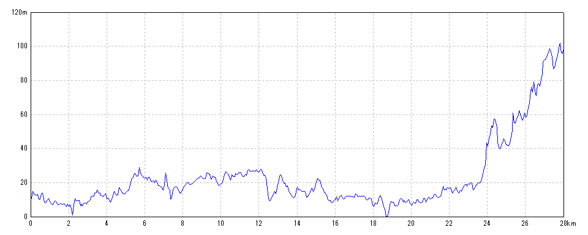
| 開始日時 | 2026/06/17 07:28:53 | 終了日時 | 2026/06/17 13:05:32 |
| 水平距離 | 28.00km | 沿面距離 | 28.07km |
| 経過時間 | 5時間36分39秒 | 移動時間 | 4時間50分01秒 |
| 全体平均速度 | 5.00km/h | 移動平均速度 | 5.78km/h |
| 最高速度 | 21.93km/h | 昇降量合計 | 592m |
| 総上昇量 | 339m | 総下降量 | 253m |
| 最高高度 | 104m | 最低高度 | -1m |
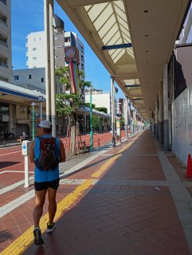
2026/06/17 07:32:14
商店街を走る
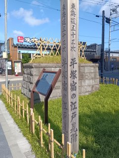
2026/06/17 07:36:44
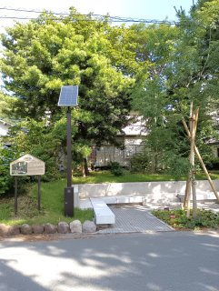
2026/06/17 07:59:31
住宅街の中
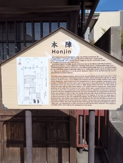
2026/06/17 08:12:55
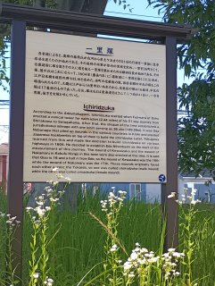
2026/06/17 08:45:51
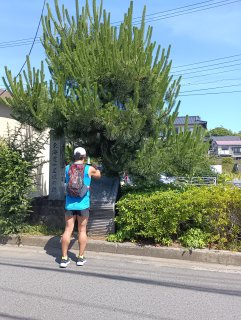
2026/06/17 09:26:01
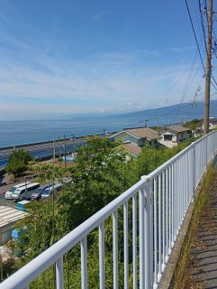
2026/06/17 09:38:29
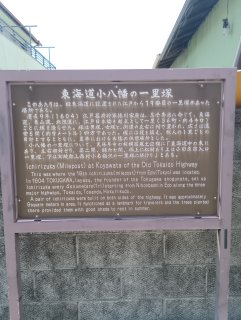
2026/06/17 10:08:28
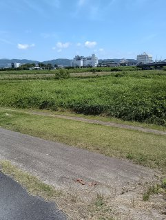
2026/06/17 10:43:40
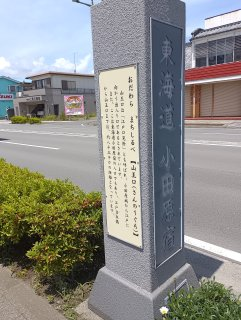
2026/06/17 10:58:51
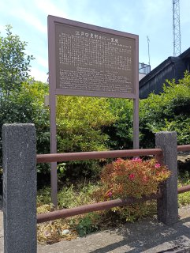
2026/06/17 10:59:41
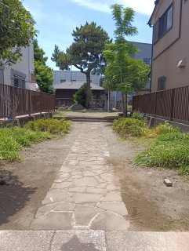
2026/06/17 11:14:11
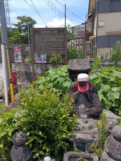
2026/06/17 12:21:38